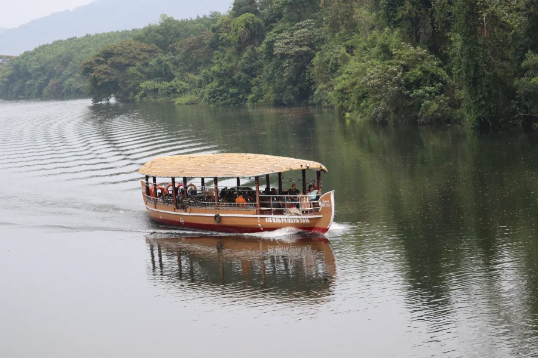

01 / 04
Bhoothathankettu
Explore the scenic surroundings and enjoy the natural beauty of the region.
- From Riparian
- ≈ 1.6 km straight-line
- Best for
- Water views & an unhurried outing
- Take your time
- A relaxed half-day


Kothamangalam · Kerala
A private pool villa retreat where forest edges, river air and unhurried days meet.
Reconnect with nature in the peaceful surroundings of Kothamangalam. Riparian Resort offers a relaxing escape for travellers looking to explore the greenery, waterways and natural attractions of central Kerala.
What makes Riparian Resort special
5Bedrooms20Guests


Escape into nature
Located in Kothamangalam, Riparian Resort places you close to some of the region's popular nature destinations.
Bhoothathankettu is just a short drive away, while Thattekad Bird Sanctuary is also nearby, making the property an appealing choice for travellers who want to combine relaxation with nature exploration.


Find Riparian in the landscape, then choose a nearby place for an unhurried day out.
Kothamangalam, Kerala

A little time by the water.
Resort directions ↗A local field guide. Select a marker to explore. Connections show proximity, not roads; driving distances vary. Map data © OpenStreetMap contributors.

01 / 04
Explore the scenic surroundings and enjoy the natural beauty of the region.
Use Riparian Resort as a peaceful base for exploring Bhoothathankettu, Thattekad and the natural side of central Kerala.
Enquire now